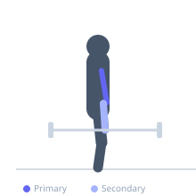

Exercise guide / Barbell Drag Curl
Barbell Drag Curl
The drag curl is a barbell curl variation where the bar is dragged upward along the torso rather than curled forward in a standard arc. By pulling the elbows back as the bar rises, the biceps are placed under a unique tension angle and the brachialis is recruited heavily. The dragging path also eliminates front deltoid assistance, making it a stricter bicep isolation exercise than the standard curl.
Primary muscles
biceps brachii long head
biceps brachii short head
brachialis
Secondary muscles
brachioradialis
Equipment
Standard Barbell


Starting position
- Stand upright holding a barbell at arm's length in a supinated grip. Bar rests at thigh level.
Setup
- Use a straight barbell or EZ-bar. Grip shoulder-width. Stand tall.
Steps
- Step 1: Begin curling by pulling the elbows back and dragging the barbell upward along the torso.
- Step 2: The bar should stay close to the body — almost touching — as it travels from thighs to upper abs.
- Step 3: Continue until maximum elbow flexion is reached and the bar is near the upper chest.
- Step 4: Lower the bar slowly back to the thighs along the same dragging path.
Coaching cues
- Drag the bar up your shirt
- Elbows pull back as the bar rises
- No swing
Breathing
- Exhale on the curl, inhale on the return.
Range of motion
- Thighs to upper chest, bar stays in contact or near contact with the torso throughout.
Tempo
- 2-1-3-0
Common mistakes
- Swinging the bar forward instead of dragging it up the body
- Flaring the elbows outward
- Leaning back for momentum
Safety
- Keep the lower back neutral — do not hyperextend to assist the curl
Training
- hypertrophy: 8–15 reps
- hypertrophy: 3–4 sets
- Rest: {'hypertrophy': 75}